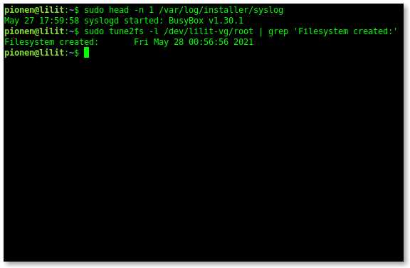

How to Find the Installation Date of Debian
Have you ever needed to know the exact date a Debian-based system was installed? Whether for troubleshooting, system auditing, or just out of curiosity, this information can be useful. While there isn't a single file named "installation-date," you can reliably find this information by consulting the installer's logs or by checking the creation date of the root filesystem.
Here's how to do it:
Using the Installer Syslog:
Debian-based systems typically log installation details in /var/log/installer/syslog. The very first entry in this file corresponds to the start of the installation process, giving you a precise date.
To view the first line, use the head command:
head -n 1 /var/log/installer/syslogChecking Filesystem Creation Date:
The creation date of the root filesystem is another excellent indicator of the installation date. This method is particularly useful if the installer logs are unavailable or incomplete.
First, identify your root partition (e.g., /dev/sda1). Then, use tune2fs to display filesystem information:
sudo tune2fs -l /dev/sda1 | grep 'Filesystem created:'Remember to replace /dev/sda1 with your actual root partition.
Note: While stat -c %w / can show the "birth time" of the root directory, this may not always align precisely with the OS installation date, especially if the root directory's creation time was modified after installation. For the most reliable information, the installer syslog or filesystem creation date provides a more dependable indication.
By using these two straightforward methods, you can quickly and accurately determine the installation date of any Debian-based system.
And here is mine, my current Debian 11.11 has been installed on May 27 17:59:58 syslogd started: BusyBox v1.30.1, notice this is in local time zone during the installation, probably when it started.
And Filesystem created: Fri May 28 00:56:56 2021 is when the installation was already completed, the time stamps are in UTC time zone.
